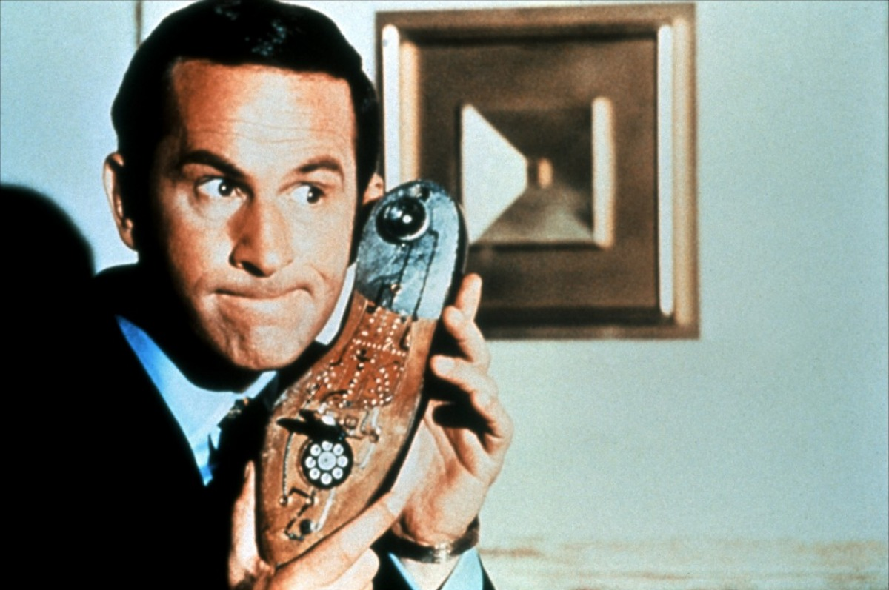

Max la Menace (Get Smart) est une série télévisée américaine en 138 épisodes de 25 à 26 minutes, créée par Mel Brooks et Buck Henry et diffusée du 18 septembre 1965 au 12 avril 1969 sur le réseau NBC et du 26 septembre 1969 au 15 mai 1970 sur le réseau CBS.
Au Québec, la série a été diffusée à partir du 17 juin 1968 à la Télévision de Radio-Canada.
En France à partir du 8 septembre 1968 sur la deuxième chaîne de l'ORTF.
Rediffusion de 1986 à 1987 sur TV6. Puis, à partir du 7 septembre 1987, dans l'émission Vive la télé sur La Cinq.
Rediffusion à partir de 1998 sur Canal Jimmy.
Rediffusion à partir du 3 septembre 2007 sur Direct 8. Entre le 3 mai 2010 et le 31 décembre 2010, Arte la rediffuse quotidiennement.
